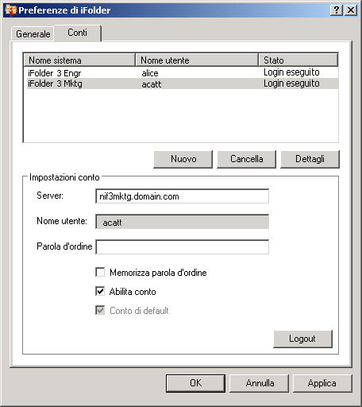

Configurazione di un conto iFolder
Prima di creare o condividere le cartelle iFolder nel sistema, è necessario configurare almeno un conto iFolder. È possibile creare un solo conto per ogni specifico server o computer host; ma è possibile disporre di più conti.
Un utente con login locale e conto utente differenti può eseguire il login allo stesso computer in un altro momento e utilizzare iFolder per creare il proprio insieme di cartelle iFolder in base a questa identità. In iFolder vengono sincronizzate solo le cartelle che appartengono all’utente attivo.
-
Per accedere alla configurazione del conto, utilizzare uno dei seguenti metodi:
- Al primo avvio di iFolder dopo l’installazione, viene visualizzato un messaggio in cui si richiede di configurare un conto iFolder. Fare clic su Sì per accedere direttamente alla finestra di dialogo Preferenze di iFolder > scheda Conti.
- Fare clic con il pulsante destro del mouse sull'icona dell'applicazione iFolder
 nell'area di notifica e scegliere Conti per aprire la scheda Conti della finestra di dialogo Preferenze di iFolder.
nell'area di notifica e scegliere Conti per aprire la scheda Conti della finestra di dialogo Preferenze di iFolder.
-
Fare clic su Nuovo per accedere all’area Impostazioni conto.
-
Specificare i valori seguenti:
Parametro Descrizione Server
Nome DNS o indirizzo IP del server aziendale iFolder su cui si dispone di conto. Ad esempio: svr21.esempio.com o 192.168.1.1.
Nome utente
Immettere l’identità dell'utente associata al conto. Il formato da utilizzare può corrispondere all'ID utente di rete (nome comune LDAP) o all'indirizzo di e-mail a seconda dell'impostazione definita dall'amministratore iFolder.
Nel caso, ad esempio, dell'utente Mario Rossi al quale sono associati l'ID utente mrossi e l'indirizzo di e-mail mario.rossi@esempio.com, l'amministratore configura un'impostazione del server in base alla quale viene definito quale dei due formati deve essere accettato nel campo Nome utente ai fini dell'autenticazione.
Parola d'ordine
Parola d'ordine associata al nome utente.
Memorizza parola d'ordine
Selezionare questa opzione per eseguire il login al conto iFolder automaticamente a ogni accesso al computer. Per informazioni, vedere Login a un conto iFolder.
Se la parola d'ordine di rete dell'utente viene modificata, al successivo tentativo di login al conto iFolder l'autenticazione automatica ha di conseguenza esito negativo. Verrà pertanto richiesto di eseguire il login con la nuova parola d'ordine e sarà possibile digitarla e salvarla.
Abilita conto
Selezionare l'opzione Abilita conto per consentire la sincronizzazione in background degli inviti di iFolder, dell'elenco degli utenti e delle cartelle iFolder relativi al conto.
Conto di default
Selezionare questa opzione per impostare il conto come default nell'elenco a discesa dei conti quando si procede alla creazione di cartelle iFolder.
 -
Fare clic su OK o su Login
Se viene visualizzato un certificato, esaminarne le informazioni, quindi fare clic su OK per accettarlo. Il conto verrà visualizzato nell’elenco dei conti nello stato Login eseguito e verrà avviata la sincronizzazione delle cartelle iFolder esistenti, delle relative notifiche e dell’elenco degli utenti associati al conto.
-
Fare clic su OK per chiudere la finestra di dialogo Preferenze di iFolder.
-
Configurare le cartelle iFolder associate al conto mediante uno dei seguenti metodi:
- Se sono disponibili cartelle iFolder associate al conto, verrà visualizzato un messaggio di notifica iFolder. Fare clic sul messaggio per aprire la finestra di dialogo Cartelle iFolder. Proseguire con Configurazione di una cartella iFolder disponibile.
- Se non ci sono cartelle iFolder associate al conto e si desidera iniziare immediatamente ad aggiungere cartelle iFolder, fare clic con il pulsante destro del mouse sull’icona dell’applicazione iFolder e scegliere Cartelle iFolder per aprire la finestra di dialogo Cartelle iFolder. Proseguire con Creazione di una cartella iFolder.